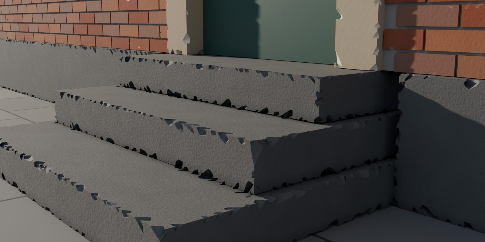
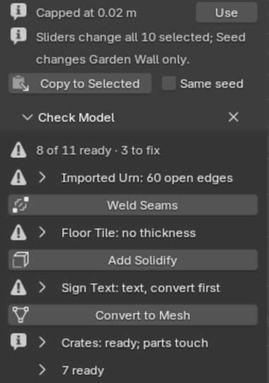
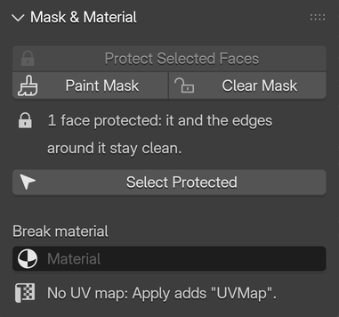
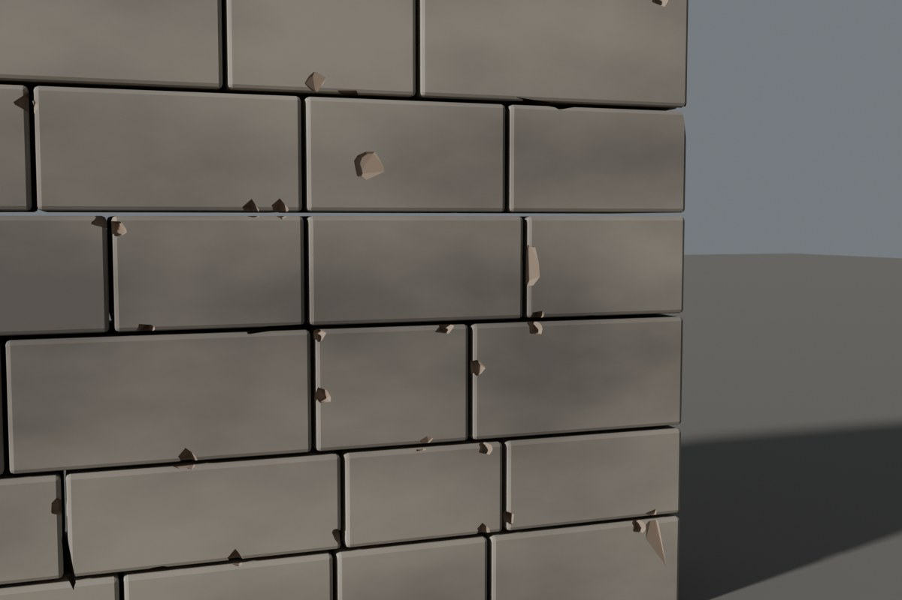
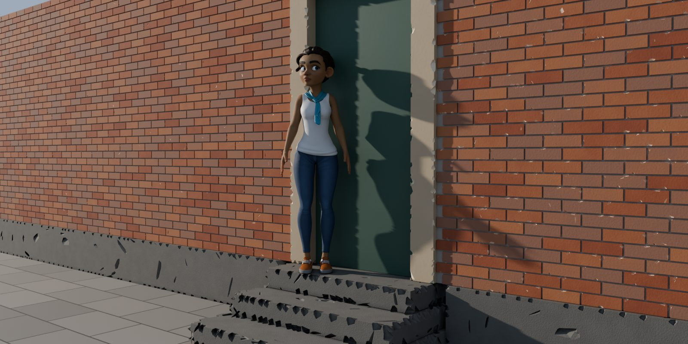
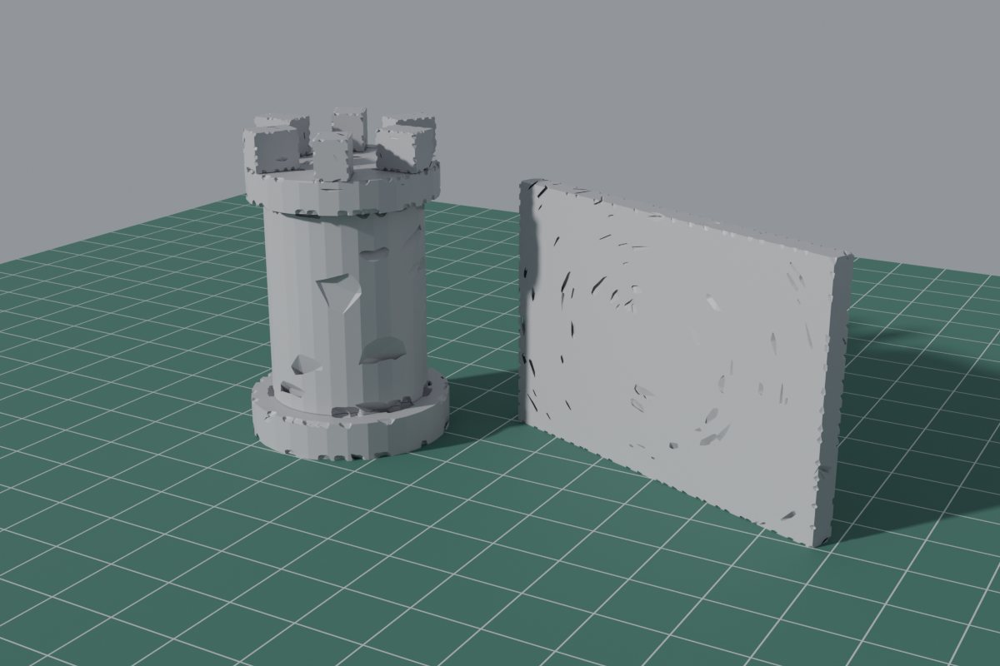

Knapwell for Blender
Chipped edges that keep separate bricks separate.
Select your meshes, press Damage: real chipped geometry, at a chip size in metres. Bricks that touch or sit apart stay separate parts (a stray chip can come loose where two meet), and Revert brings the original back, even after Apply.
One payment, source included, updates at no charge.
Blender 4.5 LTS to 5.2 LTS
Refund within 14 days if it doesn't work as described and we can't fix it (terms)
Checkout is not open yet. Email support@ochrestack.com and we will tell you when it opens.

A render of our own granite steps and brick wall, chipped by Knapwell: the steps and plinth at the Chipped look as it comes, with a paler Break material so the fresh stone shows; the door surround at Chipped; the bricks at Ruined with Chip size 0.045 m.
Watch it work
119 bricks in, 119 bricks out


- Many objects at once. Select them all and press Damage. Worn, Chipped and Ruined set the sliders; the damage stays live and editable until Apply.
- Chip size in metres. The same physical size on every object, whether or not its scale is applied. On thin parts, such as real-size bricks, chips are capped to fit the part, and the panel says so ("Capped at 0.02 m"); there the three looks differ in how many chips and how deep, not in chip size.
- Imported models too. Check Model finds split seams, holes and sheets, and text or curves that are not meshes yet, and fixes each in one click: Weld Seams, Fill Holes, Add Solidify, Convert to Mesh.
- Keep a doorway clean. Protect the faces you select: they and the edges around them stay clean. Give the broken faces a material of their own; every other face keeps its material and UVs.
- Apply for export, Revert later. Apply makes it plain mesh with outward normals; Target faces reduces it for a game. Revert to Original brings the original back, even after you save and reopen the file, until you choose Forget Original (which asks first).
In the panel




Made for

Game kits. Each block of a wall module stays a closed part, and Target faces reduces the result for your engine. The face, triangle and chip counts for our castle wall are on how we tested.

Archviz. Old steps, sills, plinths and facades, in a metre or a centimetre scene. A wall that is a plane with a Solidify modifier works without applying it.

Tabletop. Type the chip size in millimetres. After Apply, each of our test pieces gave a watertight STL where its parts do not touch; Check Model says when they do.
Facade render: Rain Rig (CC) Blender Foundation | studio.blender.org, placed in our own scene under CC BY; neither she nor Ellie is included with Knapwell, and Blender Studio does not endorse it.
Install
- Download the Knapwell zip (
knapwell-1.5.3.zip) from the link in your checkout email. Do not unzip it. - In Blender, Edit > Preferences > Get Extensions, the menu at the top right (⌄), Install from Disk..., and pick the zip.
- Press N in the 3D Viewport and open the Knapwell tab.
If Blender asks about internet access, Continue Offline is fine: Knapwell needs none. Blender may then show a yellow "Repository Alert" about its online catalogue; that is not about Knapwell. First steps: Knapwell quick start. The full manual is inside the zip.
Who doesn't need it
- You enjoy sculpting each chip by hand, or you only need wear in the render: a bevel or displacement shader does that without new geometry.
- You want to break objects apart, draw cracks, or add rebar and debris: Knapwell does none of that. Cell Fracture (free) or a destruction tool will.
The details
Closed meshes only; tested on Linux builds of Blender so far. Known limits, how we tested (twelve models, four Blender builds, speed, game-asset and STL numbers) and how the images were made are on their own page.
Buying, licence, privacy and support
- When checkout opens: secure checkout by Polar, and the download arrives by email. $15 for one artist, every feature, updates at no charge. No subscription, no licence key, no account. A studio licence for up to 10 artists is $49: write to support@ochrestack.com.
- If it doesn't work as described and we can't fix it, email us within 14 days for a full refund (terms).
- GPL-3.0-or-later; the full source is in the zip.
- Privacy: Knapwell makes no network calls. It reads and writes only the open .blend file and collects nothing.
- Support: support@ochrestack.com, with your Blender version, your operating system and, if you can, the .blend file or a screenshot of the Knapwell tab.
- Knapwell was called Spallwork until version 1.4.0. If you bought Spallwork, the Knapwell zip is yours too: write to us.
One payment, source included · Blender 4.5 LTS to 5.2 LTS